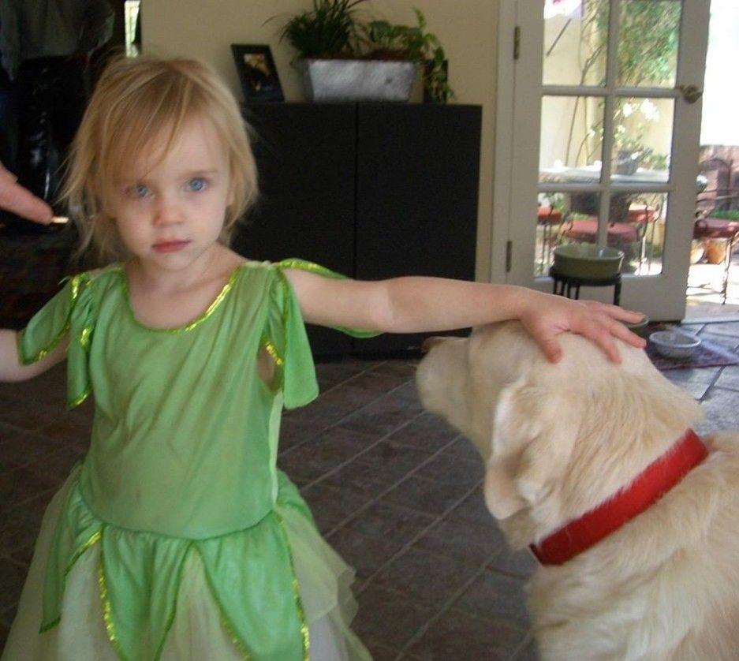
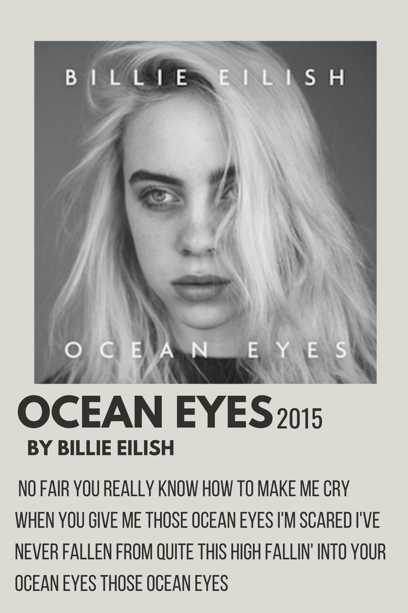
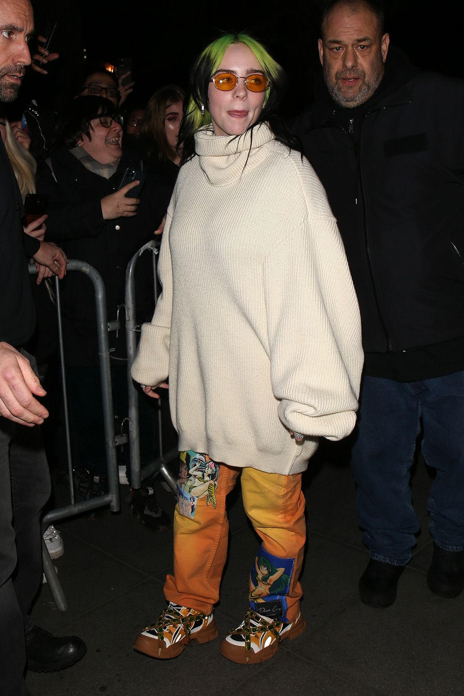
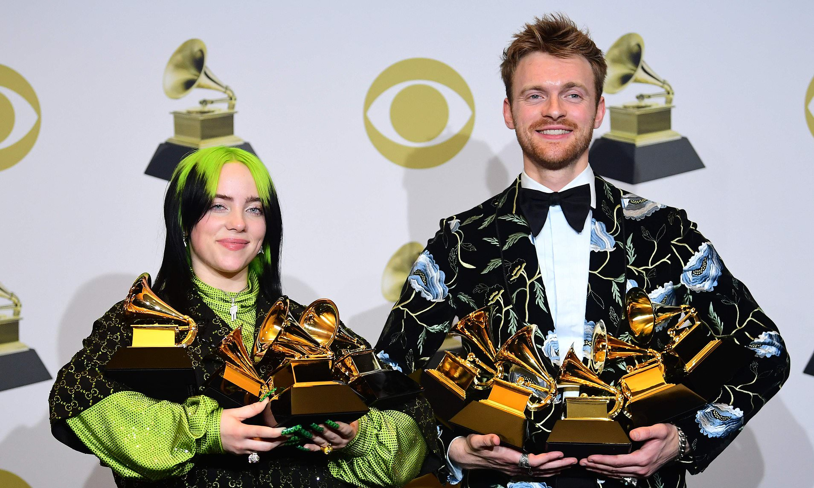
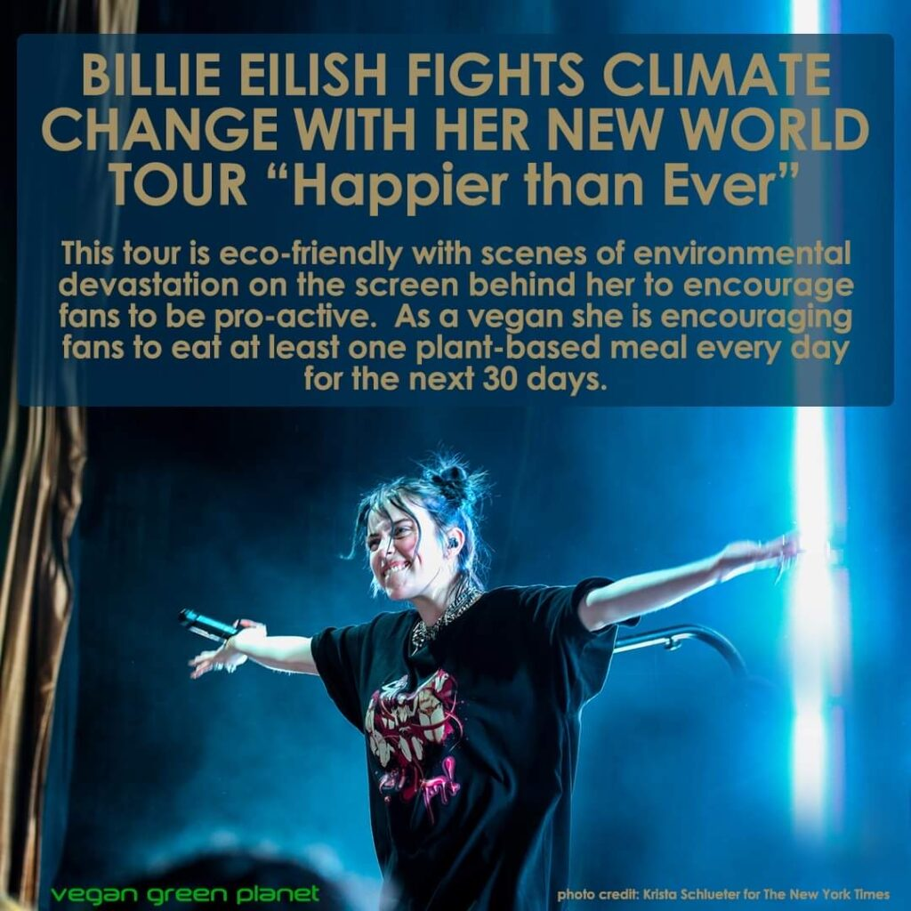
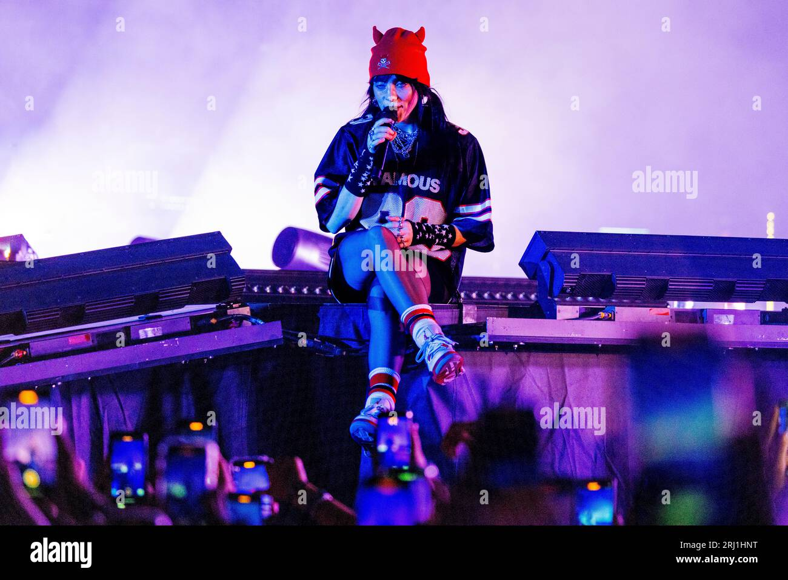

"I'm gonna make what I want to make, and other people are gonna like what they're gonna like."
— Billie Eilish

"I want to inspire and be inspired. Everyone deserves to be heard."
— Billie Eilish
"She didn't follow trends. She created them." — Her journey teaches us that talent, passion, and authenticity are enough.
